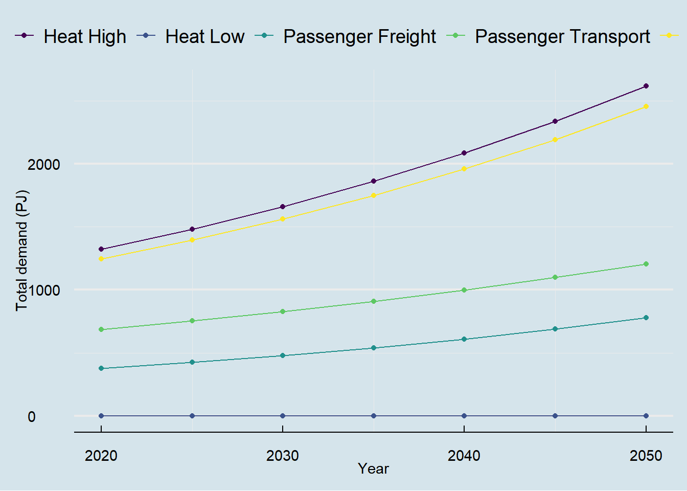
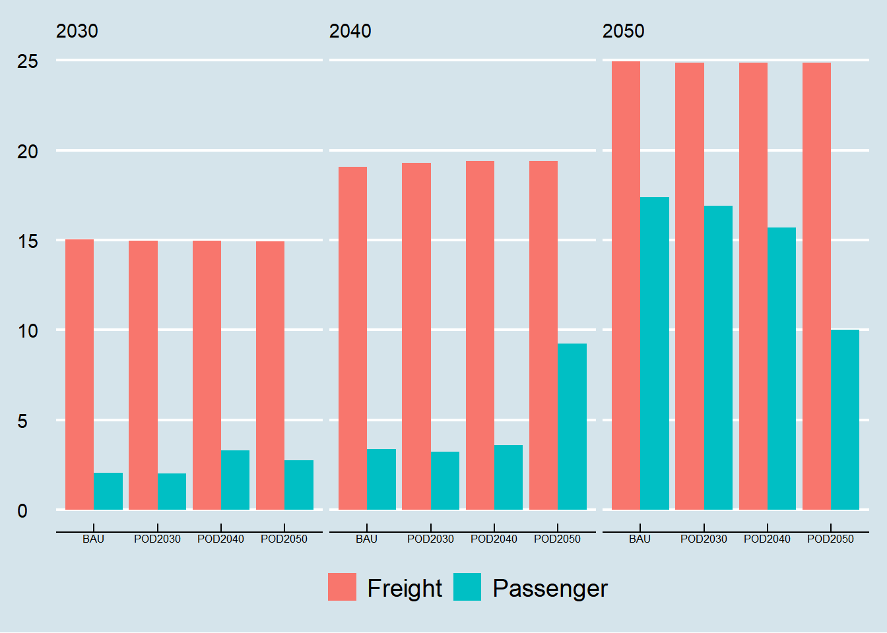
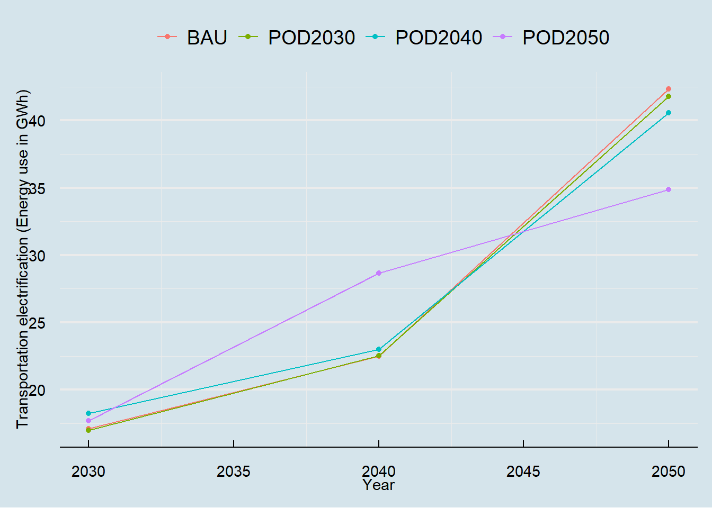
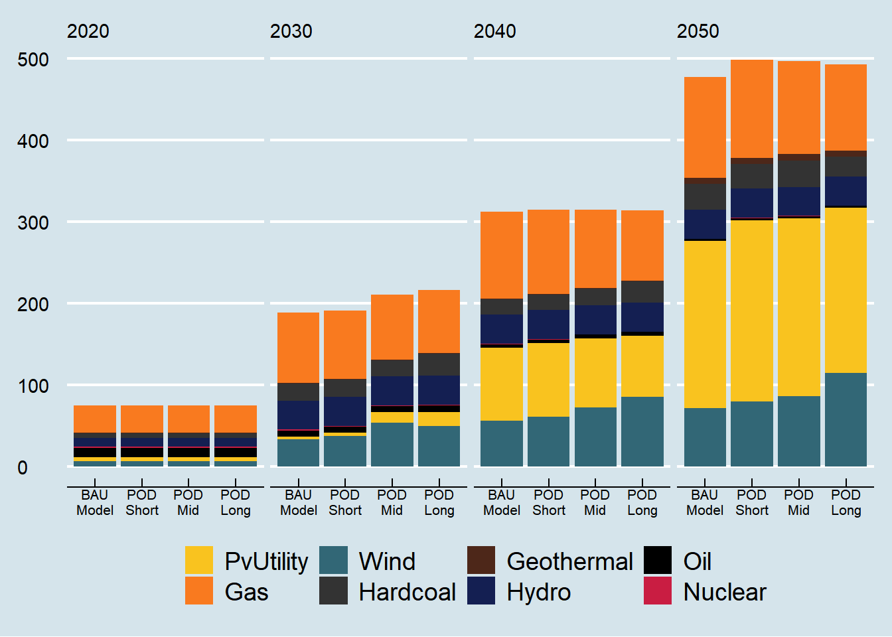
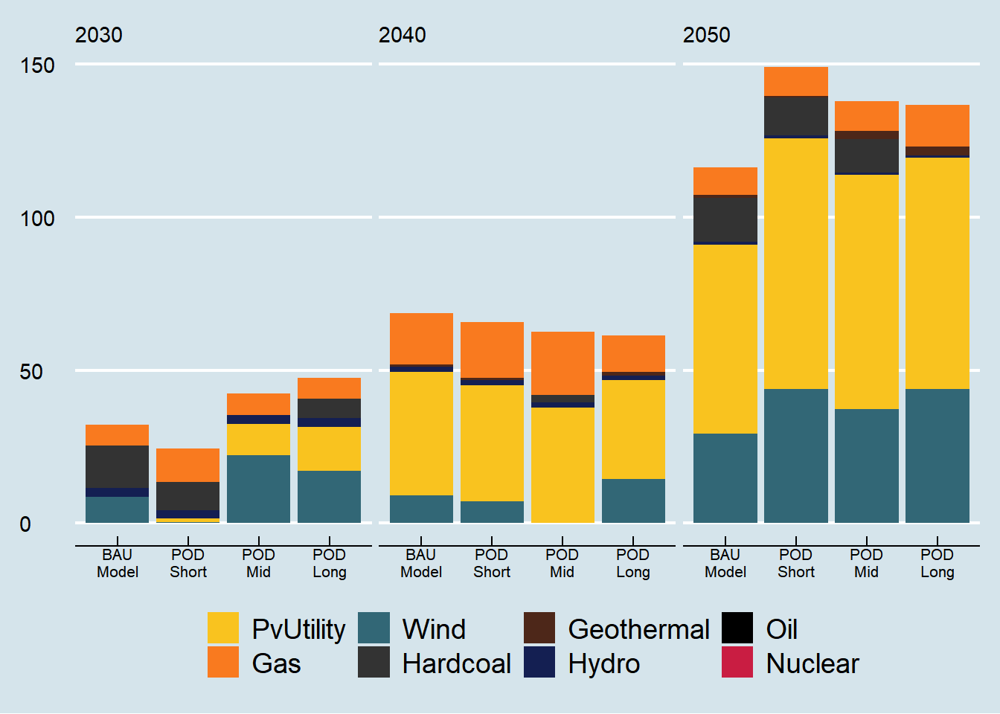
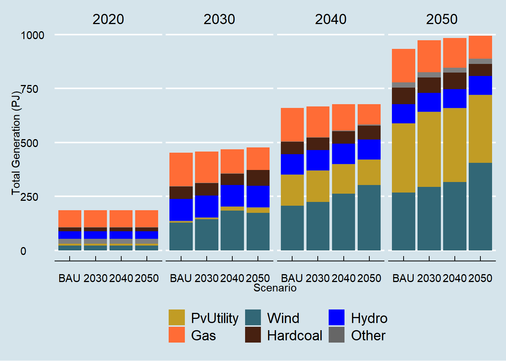
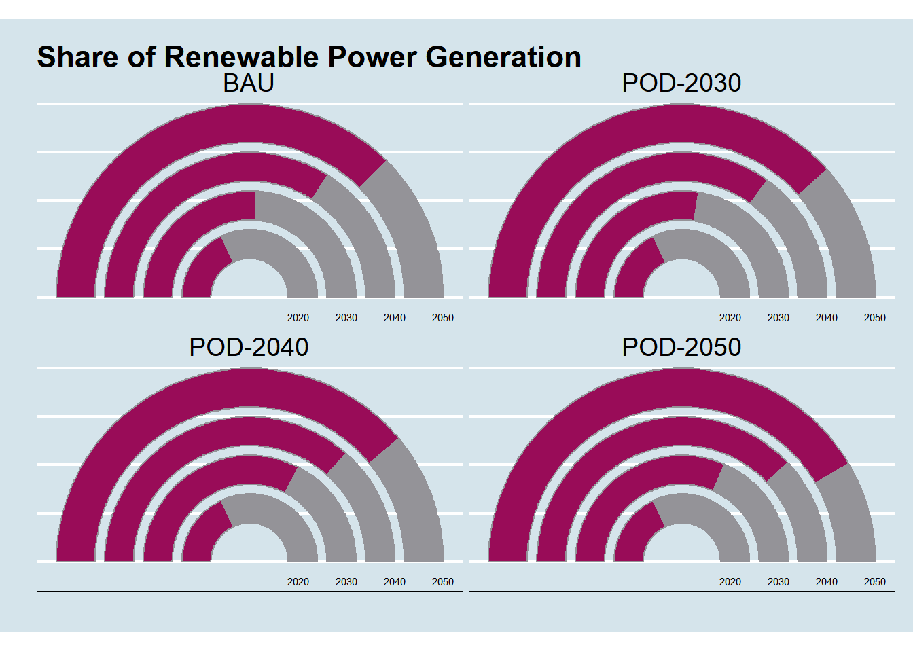
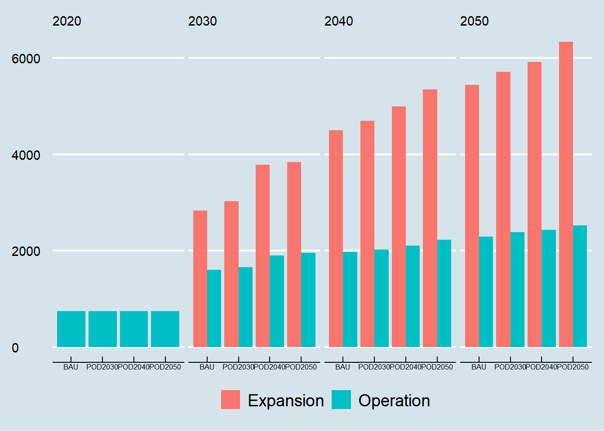
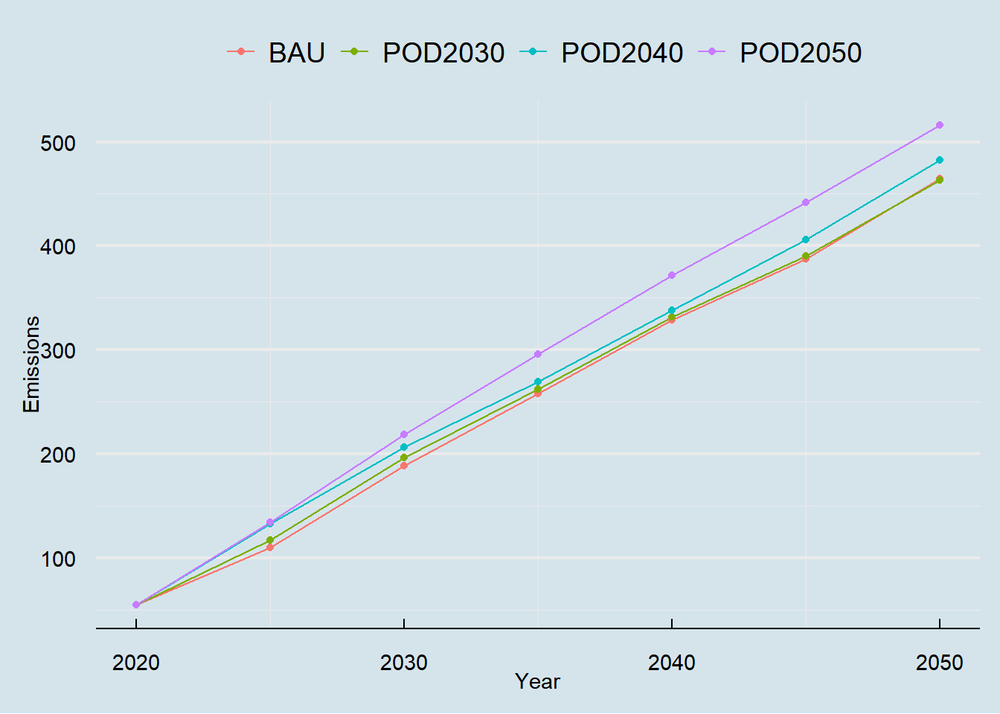
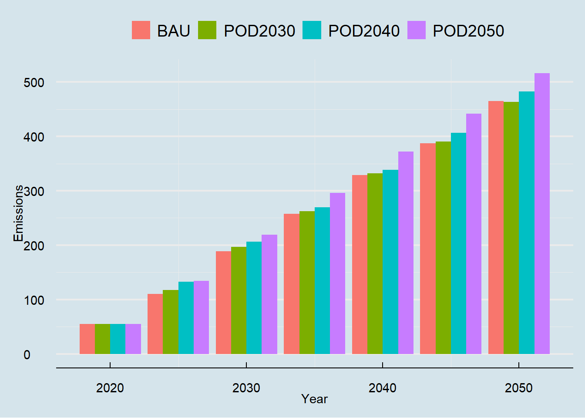

Analysis of AnyMod output
Effects on energy demand
Endogenous energy demand
First, we look at the effects of the optimization on endogenous power demand. It appears that that there are no effects (fortunately) on endogenous energy demand. Our two sectors with the highest demand for energy are power and high temperature (industrial) heating, followed by passenger and freight transport.
Show the Code
# Load the data
# Construct the data for the plot
plot = data |> group_by(carrier, period) |>
summarise(value = sum(abs(value)))
# Plot power demand
ggplot(plot) +
geom_line(aes(x = period, y = value, color = carrier, group = carrier)) +
geom_point(aes(x = period, y = value, color = carrier, group = carrier)) +
theme_economist() %+replace% theme(legend.title = element_blank()) +
grids() + labs(x = "Year", y = "Total demand (PJ)") + scale_color_viridis_d()
Transportation electrification across scenarios
Show the Code
# PLOT 1
# Create the plot data
plot = data %>% dplyr::filter(period %in% c(2020, 2030, 2040, 2050) & technology == "Electric") |>
group_by(scenario, period, type) |> summarise(value = sum(value)) |> mutate(scenario = str_wrap(scenario, 5))
# Create the bar plot with raw values
ggplot(plot) + facet_wrap(~period, ncol = 4) +
geom_bar(aes(x = scenario, y = value, fill = type, group = type), position = "dodge", stat = "identity") +
theme_economist() %+replace%
theme(legend.title = element_blank(), legend.position = "bottom", strip.text = element_text(hjust = 0),
axis.title = element_blank(), axis.text.x = element_text(size = 6)) 
Show the Code
# PLOT 2
# Create the plot data
plot2 = data %>% dplyr::filter(period %in% c(2020, 2030, 2040, 2050) & technology == "Electric") |>
group_by(scenario, period) |> summarise(value = sum(value)) |> mutate(scenario = str_wrap(scenario, 5))
ggplot(plot2) +
geom_line(aes(x = period, y = value, color = scenario)) +
geom_point(aes(x = period, y = value, color = scenario)) +
theme_economist() %+replace% theme(legend.title = element_blank()) +
grids() + labs(x = "Year", y = "Transportation electrification (Energy use in GWh)", size = 5)
Changes in the capacity Matrix
Show the Code
# Create the plot data
plot = data %>% dplyr::filter(period %in% c(2020, 2030, 2040, 2050) & variable == "capaConv") |>
group_by(scenario, technology, period) |> summarise(value = sum(value)) |> mutate(scenario = str_wrap(scenario, 5)) |>
mutate(scenario = factor(scenario, levels = c("BAU\nModel", "POD\nShort", "POD\nMid", "POD\nLong")))
# Create the bar plot with raw values
ggplot(plot) + facet_wrap(~period, ncol = 4) +
geom_bar(aes(x = scenario, y = value, fill = technology, group = technology), stat = "identity") +
theme_economist() %+replace%
theme(legend.title = element_blank(), legend.position = "bottom", strip.text = element_text(hjust = 0),
axis.title = element_blank(), axis.text.x = element_text(size = 8)) +
scale_fill_manual(values = c("PvUtility" = "#F9C31F", "Gas" = "#F97A1F","Wind" = "#326776",
"Hardcoal" = "#333333", "Geothermal" = "#4d2719", "Hydro" = "#141f52",
"Oil" = "black", "Nuclear" = "#c91d42"))
Show the Code
# Create the plot data
plot = data %>% dplyr::filter(period %in% c(2020, 2030, 2040, 2050) & variable == "capaConv") %>%
group_by(scenario, technology, period) |> summarise(value = sum(value)) %>%
group_by(scenario, period) %>%
mutate(share = round((value/sum(value))*100,4)) |> dplyr::filter(share > 0) |> mutate(scenario = str_wrap(scenario, 5)) |>
mutate(scenario = factor(scenario, levels = c("BAU\nModel", "POD\nShort", "POD\nMid", "POD\nLong")))
# Create the bar plot with raw values
ggplot(plot) + facet_wrap(~period, ncol = 4) +
geom_bar(aes(x = scenario, y = share, fill = technology, group = technology), stat = "identity") +
theme_economist() %+replace%
theme(legend.title = element_blank(), legend.position = "bottom", strip.text = element_text(hjust = 0),
axis.title = element_blank(), axis.text.x = element_text(size = 8)) +
scale_fill_manual(values = c("PvUtility" = "#F9C31F", "Gas" = "#F97A1F","Wind" = "#326776",
"Hardcoal" = "#333333", "Geothermal" = "#4d2719", "Hydro" = "#141f52",
"Oil" = "black", "Nuclear" = "#c91d42"))Show the Code
# Create the plot data
plot = data %>% dplyr::filter(period %in% c(2020, 2030, 2040, 2050) & variable == "expConv") |>
group_by(scenario, technology, period) |> summarise(value = sum(value)) |> mutate(scenario = str_wrap(scenario, 5)) |>
mutate(scenario = factor(scenario, levels = c("BAU\nModel", "POD\nShort", "POD\nMid", "POD\nLong")))
# Create the bar plot with raw values
ggplot(plot) + facet_wrap(~period, ncol = 4) +
geom_bar(aes(x = scenario, y = value, fill = technology, group = technology), stat = "identity") +
theme_economist() %+replace%
theme(legend.title = element_blank(), legend.position = "bottom", strip.text = element_text(hjust = 0),
axis.title = element_blank(), axis.text.x = element_text(size = 8)) +
scale_fill_manual(values = c("PvUtility" = "#F9C31F", "Gas" = "#F97A1F","Wind" = "#326776",
"Hardcoal" = "#333333", "Geothermal" = "#4d2719", "Hydro" = "#141f52",
"Oil" = "black", "Nuclear" = "#c91d42"))
Effects on Generation
The following figure shows the effects of changing the merit order to physical delivery dispatch at different time-intervals, i.e., 2020, 2030, 2040, and 2050.
Show the Code
# Create the plot data
plot = data %>% dplyr::filter(period %in% c(2020, 2030, 2040, 2050)) %>%
mutate(scenario = gsub("POD", "", scenario)) %>%
mutate(scenario = as.factor(scenario)) %>% mutate(scenario, relevel(scenario, "BAU")) |>
group_by(scenario, technology, period) |> summarise(value = sum(value))
# Create the bar plot with raw values
ggplot(plot) + facet_wrap(~period, ncol = 4) +
geom_bar(aes(x = scenario, y = value, fill = technology, group = technology), stat = "identity") + theme_economist() %+replace%
theme(legend.title = element_blank(), legend.position = "bottom") +
scale_fill_manual(values = c("PvUtility" = "#c19c25", "Gas" = "#ff6c36", "Wind" = "#326776",
"Hardcoal" = "#472111", "Hydro" = "blue", "Other" = "grey40")) +
labs(x = "Scenario", y = "Total Generation (PJ)") 
Show the Code
# Create the plot data
plot = data %>% dplyr::filter(period %in% c(2020, 2030, 2040, 2050)) %>%
mutate(scenario = gsub("POD", "", scenario)) %>%
mutate(scenario = as.factor(scenario)) %>% mutate(scenario, relevel(scenario, "BAU")) |>
group_by(scenario, technology, period) %>%
summarise(value = sum(value)) %>% group_by(scenario, period) %>%
mutate(share = round((value/sum(value))*100,2)) %>%
mutate(technology = ifelse(share < 5, "Other", technology))
# Create the bar-plot with raw values
ggplot(plot) + facet_wrap(~period, ncol = 4) +
geom_bar(aes(x = scenario, y = share, fill = technology, group = technology), stat = "identity") +
theme_economist() %+replace%
theme(legend.title = element_blank(), legend.position = "bottom") +
scale_fill_manual(values = c("PvUtility" = "#c19c25", "Gas" = "#ff6c36", "Wind" = "#326776",
"Hardcoal" = "#472111", "Hydro" = "blue", "Other" = "grey40", "Oil" = "black")) +
labs(x = "Scenario", y = "Total Generation (PJ)") As it is clear from the picture, there are no strong changes in the generation Matrix of the power sector. Table Table 1 shows the difference in Generation concerning BAU for each scenario and for ten year intervals between 2020 and 2050. The first obvious effect is a short-term decrease in power generation in 2020. However, this decrease does not last for long. By 2030, generation is only below BAU in POD2030 and by 2050, power generation is 32, 48, and 50 PJ higher in the POD2030, POD2040, and POD2050 scenarios. Regarding the percentage change with respect to the BAU, table @tab-ShareGen contains the percentage
Show the Code
# Calculate the changes in generation w.r.t. BAU per technology
tab = data %>% group_by(period, scenario) %>% summarise(value = sum(value)) %>%
spread(., scenario, value) |>
mutate(POD2030 = paste0(round(POD2030 - BAU,2), " (",round(((POD2030 - BAU)/BAU)*100,2), "%", ")"),
POD2040 = paste0(round(POD2040 - BAU,2), " (",round(((POD2040 - BAU)/BAU)*100,2), "%", ")"),
POD2050 = paste0(round(POD2050 - BAU,2), " (",round(((POD2050 - BAU)/BAU)*100,2), "%", ")")) %>%
select(-BAU) %>% gather(., scenario, value, -c(period)) %>%
dplyr::filter(period %in% c(2020, 2030, 2040, 2050)) %>% spread(., period, value) |> rename(Scenario = scenario)
# Calculate the percentage change in BAU generation
#### Create the table ####
kbl(tab) %>%
kable_classic(full_width = T, html_font = "Cambria") %>%
kable_styling(bootstrap_option = c("hover")) |>
column_spec(c(1), italic = T, color = "DarkBlue")| Scenario | 2020 | 2030 | 2040 | 2050 |
|---|---|---|---|---|
| POD2030 | 0 (0%) | 6.26 (1.38%) | 7.66 (1.16%) | 38.93 (4.17%) |
| POD2040 | 0 (0%) | 16.55 (3.66%) | 18.41 (2.79%) | 49.44 (5.29%) |
| POD2050 | 0 (0%) | 24.39 (5.39%) | 17.43 (2.64%) | 60.55 (6.48%) |
Figure X shows the polar difference (Esto solo fue un experimento rulo, creo el graph se ve cool, aun no se como integrarlo bien al paper)
Show the Code
#### Construct the data for the plot ####
plot = data %>% dplyr::filter(period %in% c(2020, 2030, 2040, 2050)) %>%
mutate(scenario = gsub("POD", "POD-", scenario)) %>%
mutate(TechGroup = gsub("Solar|Wind", "Renewable", TechGroup)) |>
group_by(scenario, TechGroup, period) |>
summarise(value = sum(value)) %>% group_by(scenario, period) %>%
mutate(share = round(value/sum(value),2)) %>% select(-value) %>%
mutate(no_share = 1 - share) %>% gather(., type, perc, -c(scenario, TechGroup, period)) %>%
arrange(scenario, TechGroup, period, desc(type)) |>
group_by(TechGroup, period, scenario) %>% mutate(ymax = cumsum(perc)) %>%
mutate(ymin = ymax - perc) %>%
mutate_at(vars(starts_with("y", ignore.case = FALSE)), rescale, to = pi*c(-.5,.5), from = 0:1) |>
dplyr::filter(TechGroup == "Renewable")
#### Add the text for the plot ####
text_df <- tibble(x = c(0.25, 0.5, 0.75, 1),
y = c(-0.1, -0.1, -0.1, -0.1),
label = c("2020", "2030", "2040", "2050"))
#### Construct the plot ####
ggplot() + facet_wrap(~scenario , nrow = 2) +
geom_arc_bar(data = dplyr::filter(plot, period == 2050),
aes(x0 = 0, y0 = 0, r0 = 0.8, r = 1, start = ymin, end = ymax, fill = type),
color = "#949398") +
geom_arc_bar(data = dplyr::filter(plot, period == 2040),
aes(x0 = 0, y0 = 0, r0 = 0.6, r = 0.75, start = ymin, end = ymax, fill = type),
color = "#949398") +
geom_arc_bar(data = dplyr::filter(plot, period == 2030),
aes(x0 = 0, y0 = 0, r0 = 0.4, r = 0.55, start = ymin, end = ymax, fill = type),
color = "#949398") +
geom_arc_bar(data = dplyr::filter(plot, period == 2020),
aes(x0 = 0, y0 = 0, r0 = 0.2, r = 0.35, start = ymin, end = ymax, fill = type),
color = "#949398") +
geom_text(data = text_df, mapping = aes(x = x, y = y, label = label), size = 2) +
coord_fixed() + labs(title = "Share of Renewable Power Generation") +
scale_fill_manual(breaks = c("share", "no_share"),
values = c("#990c58", "#949398")) +
guides(fill = "none") + labs(x = "", y = "") +
theme_economist() %+replace%
theme(axis.text = element_blank(),
axis.ticks = element_blank())
Cost comparison between scenarios
Show the Code
# Create the plot data
plot = data %>% dplyr::filter(period %in% c(2020, 2030, 2040, 2050)) |>
group_by(scenario, period, variable) |> summarise(value = sum(value)) |> mutate(scenario = str_wrap(scenario, 5))
# Create the bar plot with raw values
ggplot(plot) + facet_wrap(~period, ncol = 4) +
geom_bar(aes(x = scenario, y = value, fill = variable, group = variable), position = "dodge", stat = "identity") + theme_economist() %+replace%
theme(legend.title = element_blank(), legend.position = "bottom", strip.text = element_text(hjust = 0),
axis.title = element_blank(), axis.text.x = element_text(size = 6)) 
Effects on emissions
Show the Code
# Create the plot data
plot = data |>
group_by(scenario, period) |> summarise(value = sum(value)) |> mutate(scenario = str_wrap(scenario, 5)) |> group_by(scenario) |> mutate(cumsum = cumsum(value))
ggplot(plot) +
geom_line(aes(x = period, y = cumsum, color = scenario)) +
geom_point(aes(x = period, y = cumsum, color = scenario)) +
theme_economist() %+replace% theme(legend.title = element_blank()) +
grids() + labs(x = "Year", y = "Emissions", size = 5)
Show the Code
ggplot(plot) +
geom_bar(aes(x = period, y = cumsum, fill = scenario), stat = "identity", position = "dodge") +
theme_economist() %+replace% theme(legend.title = element_blank()) +
grids() + labs(x = "Year", y = "Emissions", size = 5)